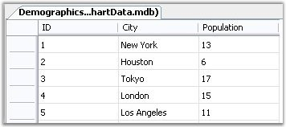
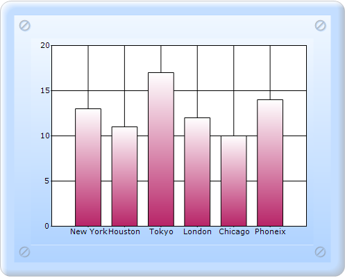

The following sample code illustrates how a custom DataSet can be bound to a ChartSeries to provide data points and to a ChartAxis to provide label names. Note that the DataSet can easily be replaced with a DataTable or DataView.

Figure 278: Access table data that is about to get bound to Chart
To bind the dataset to the chart:
1. In Controller, create an instance of MVCChartModel.
2. Create an instance of ChartSeries, and set the SeriesType.
3. Set the ChartSeries, ChartArea, and ChartModel properties.
4. Open the OlEDBConnection.
5. Create an instance ChartDataBindAxisLabelModel and ChartDataBindModel, and bind as shown in the following code snippet.
6. Return view to the corresponding View page after setting the ChartModel to the ViewData.
[C#]
public ActionResult SimpleChart()
{
MVCChartModel chartModel = new MVCChartModel();
// Create a chart series and add data points to it.
// The Access database
string fileName = Server.MapPath(string.Empty) + (@"\App_Data\ChartData.mdb");
string myConnectionString = "PROVIDER=Microsoft.Jet.OLEDB.4.0;Data Source=" + fileName;
// Define the database query
string mySelectQuery = "SELECT City, ID, Population FROM Demographics";
// Create a database connection object using the connection string
OleDbConnection myConnection = new OleDbConnection(myConnectionString);
// Create a database command on the connection using query
OleDbCommand myCommand = new OleDbCommand(mySelectQuery, myConnection);
myCommand.Connection.Open();
ChartDataBindAxisLabelModel xAxisLabelModel = null;
// Create a database reader
OleDbDataReader myReader = myCommand.ExecuteReader(CommandBehavior.CloseConnection);
//Load the contents to a dataset.
DataSet dataSet = ConvertToDataSet(myReader, "Demographics");
//Initializes new chart series.
ChartSeries series = new ChartSeries();
series.Name = "Products";
ChartDataBindModel model = new ChartDataBindModel(dataSet, "Demographics");
model.XName = "ID";
model.YNames = new string[] { "Population" };
series.SeriesModel = model;
series.Type = ChartSeriesType.Column;
xAxisLabelModel = new ChartDataBindAxisLabelModel(dataSet, "Demographics");
xAxisLabelModel.LabelName = "City";
//Adds the series to the ChartSeriesCollection.
chartModel.Series.Add(series);
chartModel.PrimaryXAxis.LabelsImpl = xAxisLabelModel;
xAxisLabelModel.PositionIndex = 1;
chartModel.PrimaryXAxis.TickLabelsDrawingMode = ChartAxisTickLabelDrawingMode.UserMode;
chartModel.Skins = ChartModelSkins.Office2007Blue;
chartModel.ChartSeriesSkins = ChartSeriesSkins.Analog;
chartModel.BorderAppearance.SkinStyle = ChartBorderSkinStyle.Pinned;
chartModel.Size = new Size(500, 400);
ViewData.Model = chartModel;
return View();
}
protected DataSet ConvertToDataSet(OleDbDataReader dataReader, string tableName)
{
DataSet dataSet = new DataSet();
do
{
// Create new data table
DataTable schemaTable = dataReader.GetSchemaTable();
DataTable dataTable = new DataTable(tableName);
if (schemaTable != null)
{
// A query returning records was executed
for (int i = 0; i < schemaTable.Rows.Count; i++)
{
DataRow dataRow = schemaTable.Rows[i];
// Create a column name that is unique in the data table
string columnName = (string)dataRow["ColumnName"]; //+ "<C" + i + "/>";
// Add the column definition to the data table
DataColumn column = new DataColumn(columnName, (Type)dataRow["DataType"]);
dataTable.Columns.Add(column);
}
//Add the data table to the dataset
dataSet.Tables.Add(dataTable);
// Fill the data table
while (dataReader.Read())
{
DataRow dataRow = dataTable.NewRow();
for (int i = 0; i < dataReader.FieldCount; i++)
dataRow[i] = dataReader.GetValue(i);
dataTable.Rows.Add(dataRow);
}
}
else
{
// No records were returned.
DataColumn column = new DataColumn("RowsAffected");
dataTable.Columns.Add(column);
dataSet.Tables.Add(dataTable);
DataRow dataRow = dataTable.NewRow();
dataRow[0] = dataReader.RecordsAffected;
dataTable.Rows.Add(dataRow);
}
}
while (dataReader.NextResult());
return dataSet;
}
7. In the View page, invoke the ChartBuilder by using the control ID as the first argument, and convert the ViewData to MVCChartModel and set it as the second argument.
View [ASPX]
<%= Html.Chart("SimpleChart",(MVCChartModel)ViewData.Model) %>
View [cshtml]
@(new HtmlString(Html.Chart("SimpleChart",(MVCChartModel)ViewData.Model).ToString()))
8. Build and run the code, to get the following output.

Figure 279: Data Binding